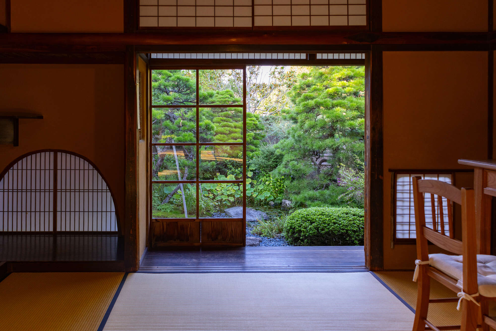
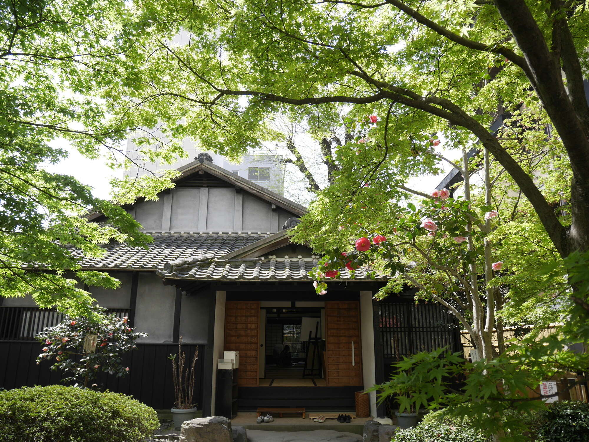

个人日语学习用离线中文版本：毎日が発見。图片已尽量保存为本地路径；未本地化资源见 report.json。
含有关键字“NHK连续剧电视小说”的文章
1
活的
发布日期：
2026 年 5 月 30 日
【风、香】第9周描绘“我”的诅咒。我开始看到的“无人”...
活的
发布日期：
2026 年 5 月 23 日
[风，香味]上坂树里的“美味”闪耀的第8周。 “狡猾”和“可爱”……
活的
发布日期：
2026 年 5 月 16 日
【风、香】两个截然不同的主角面对“遥不可及的声音”。我不求任何回报...
活的
发布日期：
2026 年 5 月 9 日
【风、香】伯恩斯风格“有教无教”的真谛。凛（三上爱饰）和泰（生田...
活的
发布日期：
2026 年 4 月 25 日
【风、香】一个在140年后的现代引起共鸣的关于“社会”的问题。凛（三上爱饰）和直美……
活的
发布日期：
2026 年 4 月 18 日
【风、香】凛（三上爱饰）和直美（上坂树里饰）形成鲜明对比。想起了父亲（北...
活的
发布日期：
2026 年 4 月 11 日
【风、香】 两位遭受出生诅咒的女主角。他们的武器“学者”……
活的
发布日期：
2026 年 4 月 4 日
【风、香】美上爱×上坂树里，新早间剧开始！第一周描绘的“正确性”......

活的
发布日期：
2026 年 3 月 28 日
[Bakebake]迄今为止“积累”闪耀的最后一集。土岐（高石明里饰）等人……
活的
发布日期：
2026 年 3 月 21 日
[Bakebake] 最后两周，《鬼故事》终于完成了……《奥瓦里宁根》赫布……
活的
发布日期：
2026 年 3 月 14 日
【鬼魂】吉泽亮靠刮灵魂为生的，名叫“锦织”的男人。以“佑一”为名的剧本……

活的
发布日期：
2026 年 3 月 7 日
[Bakebake] 多么好的剧本啊……用美丽的方式描绘“爱”，还有支持它的高西……
到下一个
PAGE TOP
底部横幅
 活的 发布日期：
活的 发布日期： 活的 发布日期：
活的 发布日期： 活的 发布日期：
活的 发布日期： 活的 发布日期：
活的 发布日期： 活的 发布日期：
活的 发布日期：